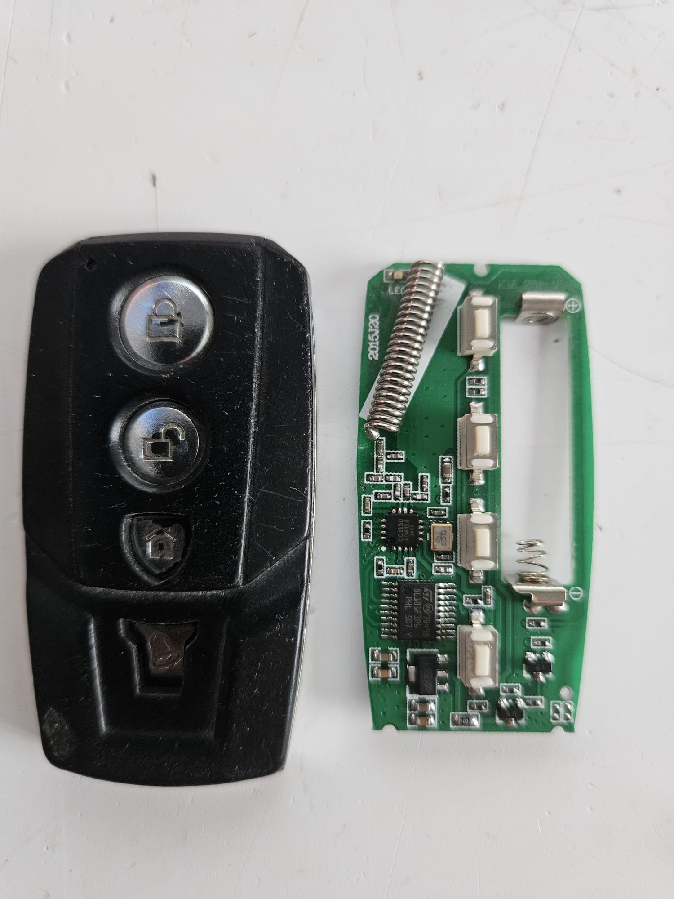
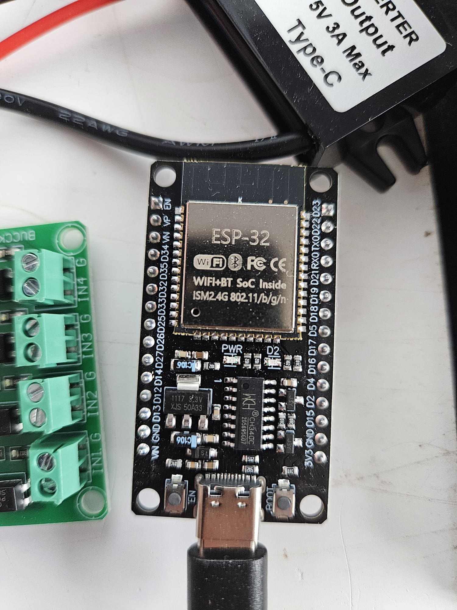
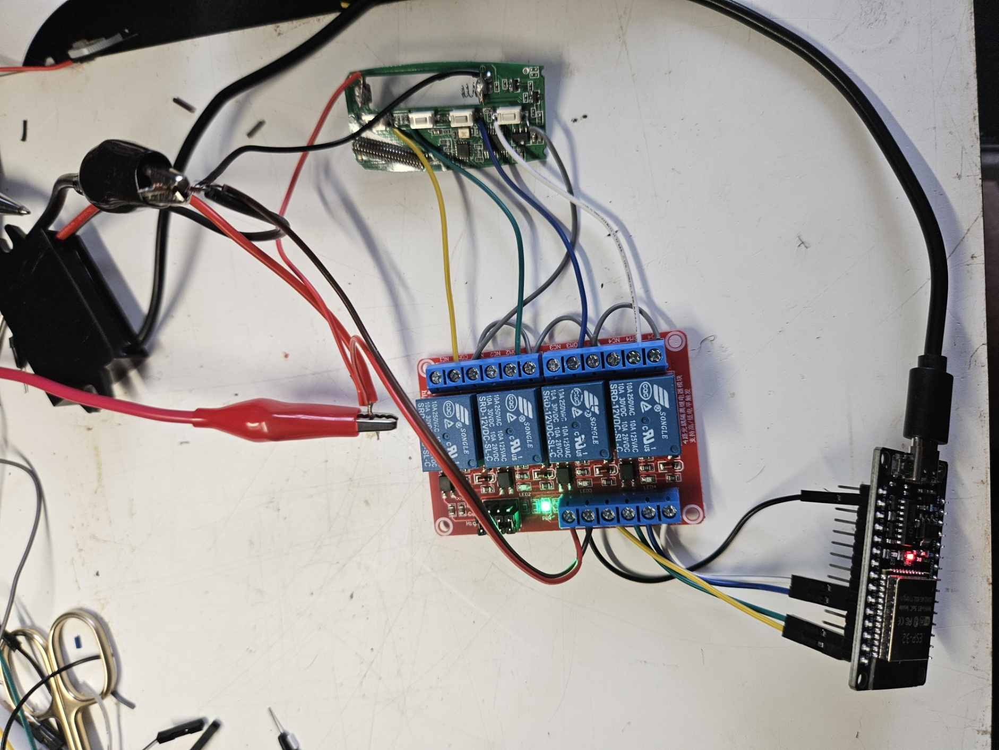
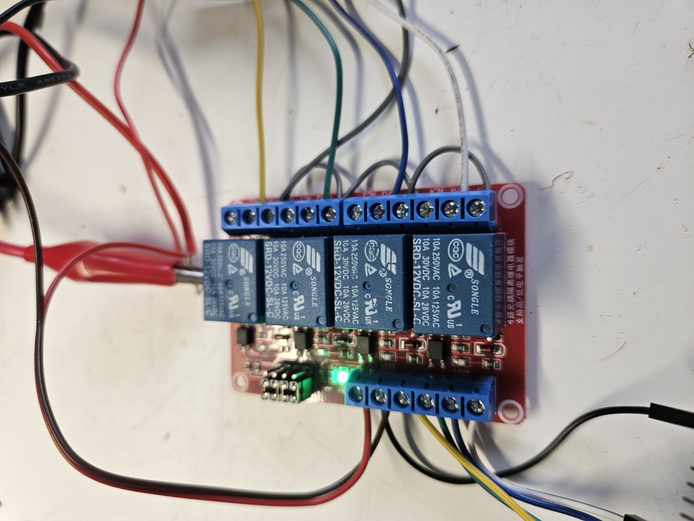
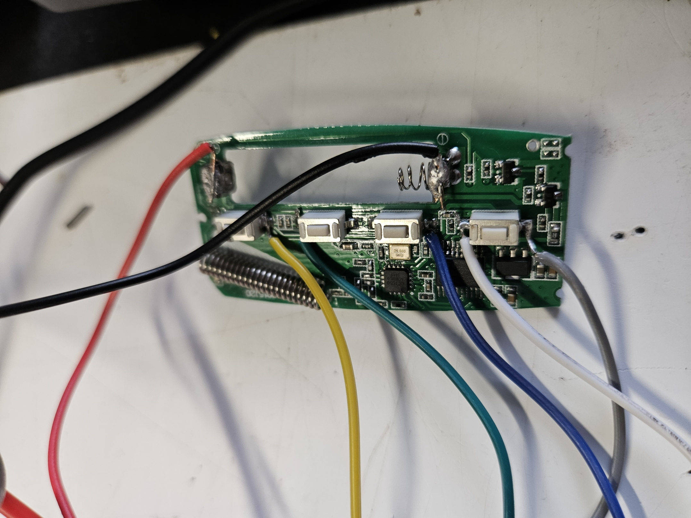
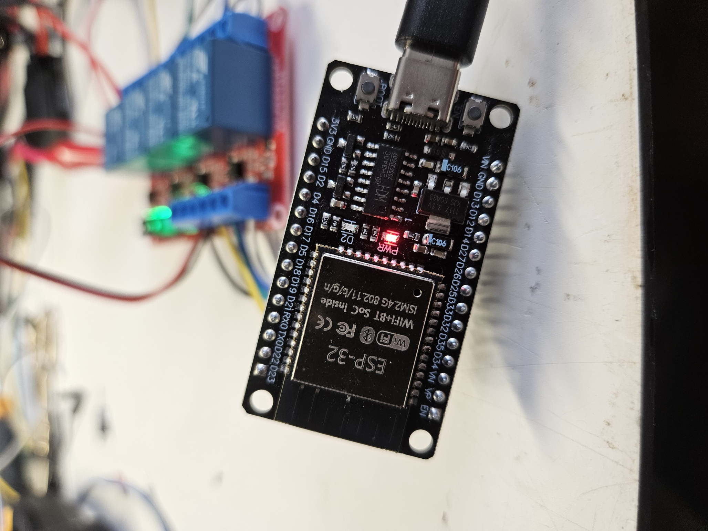
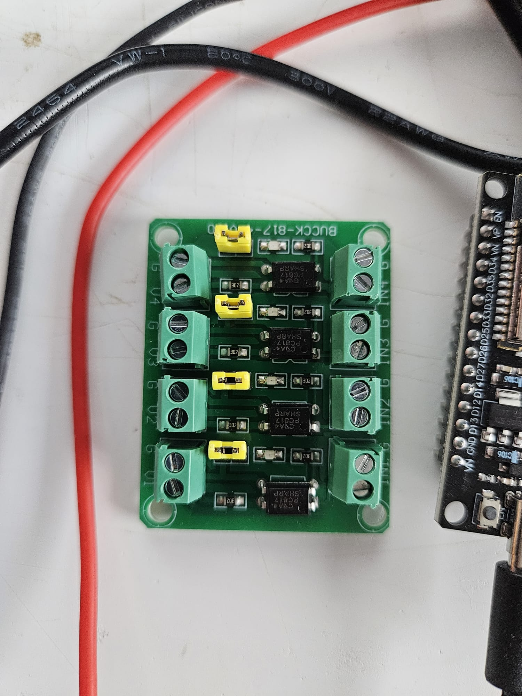

Run the tablet with no battery — the right way
An eleven-year-old lithium pouch, sealed to a wall, permanently warm, is the one genuine hazard in this whole build. The fix is to remove the cell and feed the tablet directly. The trick that makes it reliable — and the part I got wrong the first time — is to keep the pack's own little circuit board.
That PCB glued to the cell is the pack's BMS — battery management. It carries three things the tablet depends on: a protection circuit (over/under-voltage and over-current MOSFETs in series with the cell), an NTC thermistor for temperature, and usually a small fuel-gauge or ID chip. The one thing it does not contain is the charger itself — that CC/CV charging IC lives on the tablet's mainboard.
So feeding the bare mainboard connector is flaky: the tablet misses its thermistor and gauge and often refuses to boot, which is why the crude version needs a faked 10 kΩ resistor. Keep the BMS in circuit instead and feed your supply into its cell pads, and the tablet sees a completely normal battery — nothing to fake.
Keep the management board; lose the pouch
Open the pack and separate the lithium pouch from its BMS PCB, leaving the board and its mainboard connector intact. The pouch is done — discharge and dispose of it safely. Everything the tablet talks to stays on that board.
Feed ~4.0 V into the cell pads
Wire a regulated supply to the two pads where the pouch's + and − were soldered — not the mainboard connector. Set it to about 4.0 V: above the 3.8 V nominal, safely below the 4.2 V ceiling. The board passes it through its protection FETs to the tablet exactly as the cell would, and the mainboard charger sees a "nearly full" battery and simply idles.
Size the supply for the peaks
Use a buck converter that can source the tablet's >2 A current spikes (screen + CPU), fed from a beefy 5 V / 3 A or a 9–12 V brick — never the tablet's own micro-USB port, which can't run the system directly and browns out.
Know what changes
Don't exceed ~4.2 V or the board's own over-voltage protection cuts out (that's a safety feature working). And the fuel gauge now reads a fixed percentage forever — cosmetic, but it means the charge-trend tile and the whole power-management system on the wall panel become optional. With nothing left to drain, the panel just runs bright all day.
Advanced, and at your own risk. This means opening the tablet and soldering to a live lithium battery's board. Confirm polarity with a meter before you connect anything — the two pads reading 3.7–4.2 V are + and −. Disconnect and tape off the old pouch before it goes anywhere near the wall. Done right, there's no battery left to drain or swell — which is exactly why wall-panel builders do it.
Letting software press the key fob
The alarm's radio hub is slow to wake, so a voice "disarm" can lag. The fix is to press the buttons on a spare enrolled key fob electronically — an ESP32 drives four isolated relays, each closing across one button, so Home Assistant and Google can Arm, Disarm, Part-arm and Panic. The fob keeps floating on its own power; nothing on its side ever touches the ESP32's ground.
How it works
Each relay is an electronic finger. A GPIO goes high, the relay's coil pulls in, and its contact closes across the two pads of one button — electrically identical to pressing it. The contact is a dry, isolated switch: it shares no copper with the coil or the ESP32, so it bridges the fob's button without dragging the fob's ground onto anything else. That isolation isn't a nicety here — as the note below explains, it's the whole reason this works.
Why a relay — and not an optocoupler or a transistor. This is the lesson that cost the most bench time. The fob floats: its button "common" sits behind a reverse-protection diode, not at true ground. Anything that shares a ground with the ESP32 — a common-ground opto board, or a bare transistor — bonds the fob's common to the system ground the moment it switches, and that jams the remote dead every time. We proved it twice before the penny dropped. A relay's contacts are galvanically isolated from its coil and the ESP32, so they bridge a button's two pads exactly like a fingertip, with nothing shared. Isolation here is the whole trick, not an optional extra.
Two worlds, one press
Wire colour map
Two worlds that never meet. On the control side the colours are triggers and everything shares one ground. On the isolated fob side the same colour is that button's signal and one grey serves the shared common. Red and black are power only.
| From | Wire | To | Purpose |
|---|---|---|---|
| Control side — shares the ESP32 / 12 V ground | |||
| 12 V PSU + | red | Relay DC+ and buck input + | Coil power |
| 12 V PSU − | black | Relay DC− and buck input − | 0 V (= ESP32 GND) |
| Buck Type-C | USB-C | ESP32 USB-C port | 5 V for the ESP32 |
| ESP32 D23 | yellow | Relay IN1 | Arm trigger |
| ESP32 D22 | green | Relay IN2 | Disarm trigger |
| ESP32 D21 | blue | Relay IN3 | Part-arm trigger |
| ESP32 D19 | white | Relay IN4 | Panic trigger |
| ESP32 GND | black | Relay DC− | Logic ground (shared) |
| Isolated fob side — floats, touches nothing above | |||
| Relay COM1 | yellow | Arm button, signal pad | One side of the press |
| Relay COM2 | green | Disarm button, signal pad | One side of the press |
| Relay COM3 | blue | Part-arm button, signal pad | One side of the press |
| Relay COM4 | white | Panic button, signal pad | One side of the press |
| Relay NO1–4 | grey | The fob's shared common "G" pad | Other side of the press |
The one rule that makes or breaks it: the fob's grey "G" wires (relay NO) go only to the fob's own common pad — never to the 12 V −, the ESP32 GND, or the relay's DC−. The instant those grounds meet, the remote jams. Leave the fob on its own cell (or give it a completely separate, isolated 12 V supply) so its ground stays its own.
One channel, end to end
D23 high → IN1 → the coil pulls in → the contact closes COM-to-NO, bridging the Arm button's signal pad to the fob's common pad. That's exactly the short a continuity probe makes across those two points to press the button. The other three channels are identical, each with its own colour.
Where everything plugs in
ESP32 · right-hand header
- D23 yellow → IN1 · Arm
- D22 green → IN2 · Disarm
- TX0/RX0skip — used for flashing
- D21 blue → IN3 · Part-arm
- D19 white → IN4 · Panic
- GND black → relay DC−
Relay module (4-ch, 12 V)
- DC+red → +12 V (coil power)
- DC−black → 0 V = ESP32 GND
- IN1-4colour in from D23/D22/D21/D19
- COMxthat button's signal pad (colour)
- NOxgrey → the shared common "G"
- jumperset High-level trigger (3.3 V high = on)
Remote PCB
- SW1Arm · top
- SW2Disarm
- SW3Part-arm
- SW4Panic · bottom
- presssignal pad → COM · shared common → NO
- powerown cell / isolated 12 V — ground stays apart
The build, in photographs
Your hardware, annotated
The two ends of the isolated side, drawn onto your own photos. Positions are close, but always confirm against the silkscreen and a continuity check before you commit a joint.


The finished bridge
Built, wired, and driving the real alarm — the isolated relay quietly presses the fob on command.




Wired in — and it talks. The bridge is tied into the GlobalGuard panel in Home Assistant, so arm, part-arm, disarm and panic all fire the fob instantly — from the wall dashboard, and by voice through Google ("Night Security", "Day Security", "House Panic", and a PIN-gated disarm). The alarm's own radio hub is only read for status now; every command goes the fast way, through the remote.
The road here

Building the bridge
Build order
Set the relay board, then bench-test a click
Set the High/Low jumper to High-level trigger. Power DC+/DC− from 12 V, tie DC− to the ESP32 GND, and touch IN1 to 3V3 — the relay should click and a meter across COM–NO should close. Repeat for all four before anything goes near the fob.
Keep the fob floating
Leave the fob on its own cell (or a separate, isolated 12 V supply). Its ground must never bond to the ESP32/PSU ground — that single mistake is what jams it. Nothing you wire on the isolated side touches the control side's 0 V.
Find each button's two press points
For each button, identify the signal pad and the shared common "G" — a continuity probe across the two triggers that button. Those two points are the relay's COM and NO. On this remote the common sits behind a reverse-protection diode, which is exactly why it must stay isolated.
Wire the isolated side
Per channel: COMx → the signal pad in its function colour; NOx → the shared common with grey (one grey serves all four). Screw terminals, or short solder tails if you tap the pads directly. Keep joints small so the case still closes.
Wire the control side
DC+ → 12 V, DC− → 0 V. IN1←D23, IN2←D22, IN3←D21, IN4←D19, one black from ESP32 GND to DC−. Every colour is one clean trigger from a GPIO to an IN.
Power up in order
12 V to the relay DC+/DC− and to the buck. Meter the buck's USB-C output — confirm ~5 V — before plugging the ESP32. Then buck USB-C → ESP32.
Flash the firmware
Load the ESPHome config below over USB once, then adopt in Home Assistant — four button.alarm_remote_bridge_* entities appear. After that it's fully over-the-air.
Test each in a safe state
Press each button in HA where a stray Arm or Panic won't wake the street. You should hear the relay click, see the fob's own LED blink, and watch the alarm respond. Panic holds the relay closed for 3.5 s (a sustained press) — the panel needs that; the other three are a quick 600 ms tap.
Panic is a held press, not a tap. Arm, Disarm and Part-arm register from a single clean 600 ms press. Panic is different: the panel wants the button held down for a few seconds before it trips, so Panic latches the relay for 3.5 s — a real thumb-on-the-button hold — then releases.
Driven over a wire, not Wi-Fi
How it's driven now — a hardwired serial link
The Wi-Fi had to go. For weeks the bridge talked to Home Assistant over Wi-Fi, and for weeks it kept dropping — blamed in turn on the mesh, the channel, a reboot timer. The real cause only showed on the ESP's own serial console: parked next to the Pi, the Wi-Fi there is −84 dBm, too weak to finish the auth handshake, so it looped on Auth Expired and never reached the network. Every arm and disarm needed that network, so nothing landed — while the relays, fob and wiring were fine the whole time. The fix: keep the ESP plugged into the Pi's USB and make the wire the control path. No Wi-Fi, no API, no OTA — a serial line can't silently fall off the network.
The firmware became a pure serial build. logger: baud_rate: 0 frees UART0 — the same GPIO1/GPIO3 the USB port uses — and a 30 ms loop reads whole-line commands (ARM, DISARM, PART, PANIC, PING), presses the matching button and acknowledges each (OK ARM, PONG, or ERR). The hold times live here too: a 600 ms tap for arm and part-arm, a longer 2 s for disarm (the fob wants ~1.5 s), and a 3.5 s hold for panic.
esphome: name: alarm-remote-bridge on_boot: priority: -100 then: [ lambda: 'id(cmd_uart).write_str("READY\n");' ] esp32: board: esp32dev framework: { type: arduino } # NO wifi / api / ota — the control path is the wired USB serial line to the Pi. logger: baud_rate: 0 # free UART0 (GPIO1/3 = the USB port) for our own use uart: id: cmd_uart tx_pin: GPIO1 rx_pin: GPIO3 baud_rate: 115200 globals: - { id: cmd_buf, type: std::string } # relay outputs — LOW at boot, so a reset can never fire the alarm. output: - { platform: gpio, id: out_arm, pin: GPIO23 } - { platform: gpio, id: out_disarm, pin: GPIO22 } - { platform: gpio, id: out_part, pin: GPIO21 } - { platform: gpio, id: out_panic, pin: GPIO19 } # each button carries an id so the serial loop can press it button: - { platform: template, id: btn_arm, name: Arm, on_press: [ output.turn_on: out_arm, delay: 600ms, output.turn_off: out_arm ] } - { platform: template, id: btn_disarm, name: Disarm, on_press: [ output.turn_on: out_disarm, delay: 2000ms, output.turn_off: out_disarm ] } - { platform: template, id: btn_part, name: Part-arm, on_press: [ output.turn_on: out_part, delay: 600ms, output.turn_off: out_part ] } - { platform: template, id: btn_panic, name: Panic, on_press: [ output.turn_on: out_panic, delay: 3500ms, output.turn_off: out_panic ] } # read whole-line commands off USB serial and act on them, acking each one interval: - interval: 30ms then: - lambda: |- while (id(cmd_uart).available()) { uint8_t c; id(cmd_uart).read_byte(&c); if (c == '\n' || c == '\r') { std::string cmd = id(cmd_buf); id(cmd_buf) = ""; if (cmd == "ARM") { id(btn_arm).press(); id(cmd_uart).write_str("OK ARM\n"); } else if (cmd == "DISARM") { id(btn_disarm).press(); id(cmd_uart).write_str("OK DISARM\n"); } else if (cmd == "PART") { id(btn_part).press(); id(cmd_uart).write_str("OK PART\n"); } else if (cmd == "PANIC") { id(btn_panic).press(); id(cmd_uart).write_str("OK PANIC\n"); } else if (cmd == "PING") { id(cmd_uart).write_str("PONG\n"); } else if (!cmd.empty()) { id(cmd_uart).write_str(("ERR " + cmd + "\n").c_str()); } } else if (id(cmd_buf).size() < 16) { id(cmd_buf) += (char) c; } }
The Pi side — a presser daemon, with a failsafe
One small Python service on the Pi (gg-esp-presser) is the only thing that holds the serial port. Home Assistant publishes arm / disarm / part / panic to an MQTT topic; the daemon writes the command down the wire, waits for the ESP's OK (three tries), and pings every 30 s so a binary_sensor shows the link live. Opening the port resets the ESP, so it's opened once and kept.
And a failsafe on top. A fob press is instant, but the panel only reports the new state to the hub six to nine seconds later — so after every arm or disarm the daemon re-reads the panel and, if it hasn't complied, presses again (up to three times). Disarm re-presses eagerly: a spare disarm is harmless and getting in fast matters most. Arm waits for the panel's report before retrying, so it can't disturb the exit countdown. Only if it still fails does your phone get a plain "use the keypad" alert. A truly instant (~1 s) confirmation is exactly what the tone-ACK mod below is for.
Flashing: because the control path is the serial port, there's no OTA — reflash over USB, and stop the gg-esp-presser service first (it holds the port). D23/D22/D21/D19 are still chosen deliberately: they sit low at boot, so the ESP can never ghost-press a button while it resets.
Think twice about voice disarm. Anyone your speaker can hear — including someone shouting through a letterbox — could say "disarm". Keep Disarm app- and dashboard-only, or require Google's PIN confirmation for it. Arm, Part-arm and Panic carry no such risk.
Sanity checklist before the first live press
- ✓ Fob left floating — its ground touches nothing on the ESP32/PSU side
- ✓ Relay board on High-level trigger; every channel clicks on the bench
- ✓ COM → signal pad, NO → the shared common "G"
- ✓ DC+ = 12 V, DC− = ESP32 GND; buck 5 V metered before the ESP32
- ✓ Each trigger is one colour GPIO → INx; each press is COMx → NOx
- ✓ Alarm in a safe state for the first live press
Hear the panel confirm planned · parts to order
The relay presses the fob in milliseconds — but the alarm's hub only reports the new state six to nine seconds later, so even the failsafe above can't be certain an arm or disarm landed until then. The panel itself says so instantly, out loud: a quick chirp on arm, a longer tone on disarm. This mod gives the bridge an electrical ear on the panel's own sounder, so Home Assistant learns the truth in tens of milliseconds instead of seconds. It's drawn and costed — it just isn't built yet.
Every "arm" today is a small act of faith for a few long seconds. Voice, dashboard or fob fires the press; Home Assistant paints the house armed; and if the radio hop was missed, the fob cell was flat, or the panel was already mid-delay, you don't find out until the hub finally reports — or until you come home to a surprise. The failsafe re-presses to cover it, but it's working blind against a 6–9 second clock.
The panel already broadcasts the one fact we want. Its little internal sounder chirps the instant it accepts a command. If we can hear that, the loop closes: press, hear the beep, done — or hear nothing, and press again within a second. The blind timer becomes a real acknowledgement.
The measured floor
A fob press is instant; the hub only sees the event 6–9 seconds later. No software check can beat that — the sounder can.
Why the speaker, and not the fob. A two-way fob would flash a confirm LED we could simply tap — but this fob is one-way: it transmits and never hears back, so its LED only means "sending", not "the panel agreed". The sounder is the only local evidence the panel actually accepted anything, so that's what we listen to. And it stays a second ESP, at the panel — the relay bridge now lives at the Pi on its wire, and the tap has to be where the sounder is. Wi-Fi is fine for this job: a missed beep just falls back to the hub poll, so it can never block an arm or disarm the way weak Wi-Fi did on the control path.
The tones on this panel
Measured at the panel: arm is three quick blips, then the exit-delay countdown settles into a slower, evenly-spaced bleep; disarm is a single longer tone. Everything else — a key press, the long countdown, a full siren — has to be told apart and ignored. We classify the shape of the sound, not its pitch.
The tap — high-Z, then a wall of plastic
Same discipline as the relay bridge: the panel's copper and the ESP's copper never share a ground. Sense the sounder in parallel through a high-impedance envelope detector, then cross an optocoupler — nothing else ever touches the panel.
Never put a pin straight across the sounder. The driver is a few volts of 2–4 kHz square wave on a confirm, and a lot more on a full alarm. Sense it in parallel through the high-impedance envelope, then isolate — the same rule that stopped the fob jamming when we first tried a common-ground opto on its buttons. The panel's sounder ground must never meet the ESP ground.
Circuit, parts & firmware
Parts — pennies on top of a spare ESP32
| Qty | Part | Why | UK ballpark |
|---|---|---|---|
| 1 | ESP32 dev board | A second one, living at the panel | £4–£7 |
| 1 | PC817 optocoupler | The isolation wall | ~£0.50 |
| 1 | 1N5819 Schottky (or 1N4148) | Rectify the tone | pennies |
| 2 | 100 nF ceramic ("104") | C1 couple · C2 envelope | pennies |
| 1 ea | 4.7 k · 100 k · 10 k · 1 k resistor | Series · bleed · pull-up · LED limit | pennies |
| opt | LM393 + 10 k pot | Cleaner threshold if the confirm tone is shy | £1–£2 |
| — | Wire, heatshrink, 2-pin plug | So the tap unplugs when the panel comes off the wall | ~£2 |
The idea, in firmware
This ESP sits at the panel with Wi-Fi, so — unlike the serial bridge — it can run ordinary ESPHome and publish straight to Home Assistant. It doesn't decide on the first edge: it counts pulse widths, waits for the sound to stop, then classifies. Three tuned numbers, learnt once from the log.
substitutions: disarm_min_ms: "600" # one solid tone this long → DISARM disarm_max_ms: "1500" pulse_min_ms: "40" # a "blip" is between these pulse_max_ms: "300" arm_pulses: "3" # ≥3 blips in the window → ARM window_ms: "1500" ignore_after: "4500" # still sounding? countdown / siren → ignore # GPIO27 = opto collector (inverted, debounced) # rising edge → start / continue a burst # falling edge → count a pulse if 40–300 ms wide # ~1.5 s after the last edge, decide: # one tone 600–1500 ms → DISARM # ≥3 short pulses, then quiet → ARM # anything past 4.5 s → ignore # then a short cooldown so the alarm strobe can't retrigger it. # exposes to Home Assistant: # binary_sensor.panel_confirmed_armed # binary_sensor.panel_confirmed_disarmed # text_sensor.last_tone_decision (ARM / DISARM / ignored)
The beep leads; the hub reconciles. When the tone fires, Home Assistant commits the alarm state and the status lights immediately — and the slow hub poll becomes a back-check only: accept it when it agrees, log it when it doesn't, but never let a late reading overwrite a beep that just said DISARM. Fast and certain, instead of one or the other.
When it's built — the bench order
Put the alarm in service mode
You're working on a live panel. Put the wirefree siren into service mode from the menu so a slip doesn't wake the street, and keep the fob bridge powered so Home Assistant can disarm if it trips.
Find the sounder pads
Slide the panel off its bracket and locate the small internal piezo — two short wires or pads near the front of the board. Confirm with a meter on AC while you disarm from the fob: a burst of a couple of volts. It's not the 868 MHz antenna, and not the battery pack.
Solder a parallel tap
Two flying leads across the sounder pads to a 2-pin plug — sense only, never cut the loop, so the panel can still come off the wall later.
Build the envelope off the board
C1 → R1 → D1 → C2/R2 → opto LED, on a scrap of protoboard that lives with the ESP, not inside the panel. If a disarm tone reads under ~1.2 V at the diode, add the LM393.
Meter the isolation, then flash
Continuity from the panel's sounder ground to ESP GND must read open before power. Then flash the YAML, open the log, and read span / high / pulses off a real disarm and a real arm.
Write the three numbers
Drop your panel's real windows into the substitutions, watch a few arms and disarms confirm in the log, then hand the tone the job of committing HA state — with the hub demoted to reconciliation.
Status: designed, costed, and waiting on a parts order — nothing built yet, so there are no annotated photos here yet. Until it's in, the 6–9 second failsafe on the relay bridge stands. If day-to-day the failsafe proves nuisance-free, this stays a nice-to-have; the day the confirm lag grates, this is the upgrade that erases it.